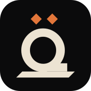
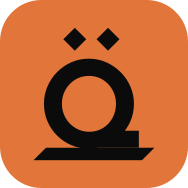

Lettres coufiques posées à plat sur une seule ligne de base (les rondeurs du S et du Q sont coupées net sur la ligne), extrémités taillées à 45° comme un trait de calame, la ligne se prolonge après le R comme une kashida, et les deux points du qāf en cuivre, calés sur le centre du Q.

Principal · fond sombre
Une couleur (gravure, cadre du vélo)
